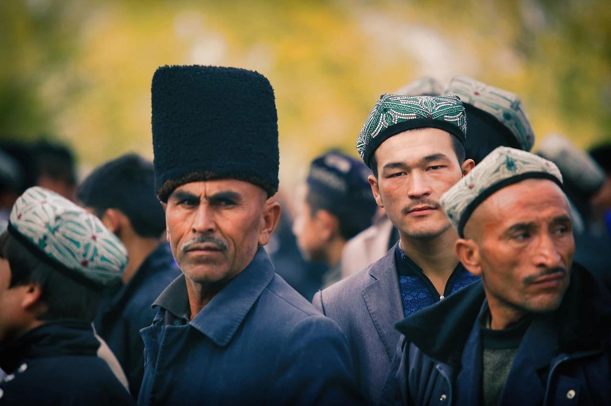

City walk
City walk
A town among the mountains, worth stopping for
Tashkurgan is not a pass-through to Pamir — it is the scenery itself.
Tashkurgan, meaning "among the mountains" in Tajik, sits on the Pamir Plateau at about 3,200 m, China's westernmost border county, bordering Pakistan, Afghanistan and Tajikistan. It is home to the Tajiks, called the "eagle people" — fair skin, deep-set eyes, men in black-velvet high caps, women in bright Atlas dresses. Climbing the Karakoram Highway from Kashgar, snow peaks, gorges and meadows rush past the window. Many treat it as a stopover to Pamir, but the small town itself is a journey.
The route at a glance
- 09:00–11:00 Stone City ruins
- 11:00–13:00 Golden Grassland (morning／dusk)
- 15:00–17:00 Tajik folk・Rainbow Lane
- 18:00–21:30 Main street (yak hotpot dinner)
- Optional: Karakul Lake・Muztagh Ata
Every step on the plateau should be slower; at altitude, keep a gentle pace and don't jump, letting the body adapt.
Stone City ruins (09:00–11:00)
North of the county seat, the Stone City is a well-preserved rammed-earth castle ruin on the Pamir Plateau; records show it was the royal city of the kingdom of Tashkurgan in the Tang dynasty, and Xuanzang passed here on his westward journey. The walls layer up the hillside like a giant honeycomb; from the top you see the Golden Grassland, the Tashkurgan River and distant snow peaks. Morning light is slanted and crowds are few — best for reading this highland history slowly.
Golden Grassland (11:00–13:00 or dusk)
Below the Stone City, the Golden Grassland is a wetland meadow fed by the Tashkurgan River, golden in summer, snow-covered in winter. At its end, Tajik stone houses frame with snow peaks; light is softest at dawn and dusk, reflections finest. It is also the classic spot for "highland Jiangnan" photos — stand a while, watch cattle chew slowly and the river flow, and you understand why people say Pamir heals.
Tip: the meadow is soft and wet — stay on the boardwalk; respect herders and livestock, don't enter private yards.
Tajik folk・Rainbow Lane (15:00–17:00)
A few lanes painted blue, yellow and red are recent photo spots, yet they truly keep Tajik life. Inside you may meet elders in black-velvet caps, women sunning by doors; if lucky, hear the eagle flute's stern voice and see the eagle dance's spreading arms. In heritage workshops, handmade carpets and embroidery glow with colour — a highland memory you can carry.
Main street・highland food (18:00–21:30)
The main street at night is short but holds Tashkurgan's warmest flavours. Pamir's free-range yak is firm, less gamey; the classic is a yak hotpot — clear bone broth, sip soup then eat meat, driving off the plateau chill. Salty milk tea with butter skin is the "highland blood" of every meal. For a change, South-Asian Pakistani dishes are also available.
- Eat: yak hotpot, Tajik salty milk tea, baked buns (samsa).
- Try: qattama layered flatbread, maren tang candy, highland yoghurt with honey.
Karakul Lake・Muztagh Ata (next day or optional)
About 100 km south of the county, Karakul Lake is a piece of blue-green glass at the foot of snow mountains, facing "Father of Ice Mountains" Muztagh Ata. The water shifts with the sky; on clear days the snow reflection is unreal. A classic stop on the Karakoram Highway — if time allows, give it half a day; the plateau's vastness blows your words away.
Locals know: Tashkurgan is about 3,200 m; climbing from Kashgar (1,300 m), no shower, no alcohol on the first night — let the body adapt. Carry portable oxygen and glucose; move slowly, no jumping. Day-night temperature swing is huge: short sleeves by day in July, fleece plus shell at night. Strong UV — sunscreen, sunglasses, wide-brim hat. China Mobile signal is steadier; download offline maps. Drones are strictly forbidden near the Khunjerab gate. Get the border permit in downtown Kashgar; don't panic in the county.
Restaurants & highland drinks
Tashkurgan has few choices, but each is honest. The picks below are steady favourites of tour fleets and locals, no influencer tricks; cafés are still rare on the plateau — for a cup you rely on milk-tea shops and fresh-milk bars. Hours may shift with season; some close in low season, so confirm before going.
Where locals eat
- Guests on the Ice Mountain performance restaurant (by Karakoram Hwy): themed on a classic film, with regular Tajik song-and-dance, lively eagle dance and flute; signature yak hotpot with highland sides.
- Yipin Yak Tonic Hotpot (314 National Rd, Qishi Sq): iconic double-layer copper pot, clear broth of bone and highland herbs; yak sliced fresh daily, hand-pulled noodles in the broth is the signature serve.
- Hunza Kitchen (Qiaogeli Rd): rare authentic Pakistani flavour in Tashkurgan — curry yak, hummus, fresh flatbread, a one-of-a-kind border experience on the Pamir.
Highland milk tea & fresh milk
- Huximazha Milk Tea: salty milk tea with milk skin and butter, warms the stomach and eases altitude; called "Etiqay" in Tajik, the locals' daily start-up ritual.
- Suman Pilaf House: a local favourite for pilaf, highland yak or lamb ribs steamed with yellow carrot, oily rice and tender meat, with a bowl of yoghurt to cut the richness.
Practical information
- Getting there: from Kashgar along Karakoram Hwy G314 about 5–6 hours to Tashkurgan; walk the county, charter a car for outskirts; border permit required.
- Best season: May–Oct is best; winter scenery is stunning but cold, some shops closed.
- Suggested stay: county City Walk half to one day; Karakul Lake and the Panlong Ancient Road need one to two extra days.
- Dress & sun: big plateau temperature swing, "onion" layering; sunscreen, sunglasses, hat; waterproof shoes for the wet mud by White Sand Lake.
- Local notes: no shower or alcohol first night for altitude; Mobile signal steadier; drones forbidden at Khunjerab; respect Tajik custom, don't refuse the naan offered as a guest.
Want to walk Pamir through? Our private car and guide plan it: from the permit in Kashgar, the Karakoram Highway to the Panlong Ancient Road — your route, no rushing, no shop stops, local driver, stop and shoot anywhere.
Keep reading
Further reading
From Pamir onward into the rest of Southern Xinjiang.
 City walk
City walk Index
Index